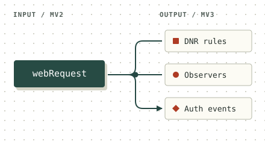

Extension field guide · v0.2.0
From listeners
to rules.
Move a Chrome extension from Manifest V2 to V3. Convert simple blocking listeners into rules Chrome enforces, and keep using webRequest for observation and authentication.
Request routing Fig. 01

01 / Quickstart
Convert your first extension
Start in the parent directory of an unpacked MV2 extension. Replace my-extension with the folder containing its manifest.json. The CLI creates a sibling folder with -mv3 added to its name.
npx --yes github:x7k6/webrequest-mv3 ./my-extensionOpen chrome://extensions, enable Developer mode, select Load unpacked, and choose my-extension-mv3. Your original extension stays in its own directory.
Want a known-good input? Try the legacy example and follow the verification steps.
02 / Field guide